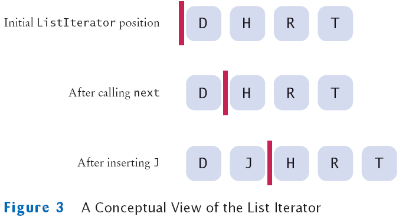

Iterators
An iterator is an object that allows you to traverse through a collection of elements one at a time. In data structures that don't allow accessing elements by index, using an iterator may be the only way to traverse the collection.Every type of collection in the JCF implements the Iterable interface, and therefore has an iterator() method that returns an iterator object. The iterator class is typically a nested class that implements the Iterator interface, which requires two methods:

List iterator. (the red line is the iterator position)
Source: cis.temple.edu/~ingargio
- next() returns the next element.
- hasNext() returns true if there is a next element.
- The optional remove() method removes the last element returned by next() or previous().
Lists (e.g. ArrayList, LinkedList) also have a listIterator() method that returns a ListIterator, which is a subinterface of Iterator. It includes the methods above, and additional methods such as previous(), hasPrevious(), and add(E e).
Sample code
UsingIterators - Shows how to use Iterators in the JCF.
(see also C++ version)
For-each loops
A for-each loop can be used to loop through the elements of any container that implements Iterable. However, you cannot remove elements during a for-each loop.Fail-fast behavior
Most iterators in the JCF are fail-fast. This means that the iterator is invalidated if the container is modified by something other than the iterator's own remove or add method (the iterator will throw a ConcurrentModificationException if you try to use it again). If there are multiple iterators, only the iterator that modified the container will still be valid.Iterator implementation
Sample codeClasses: ArrayList / ArrayQueue / SinglyLinkedList
Interfaces: List / Queue
These are simplified implementations of the JCF iterators (only next() and hasNext() are implemented, and fail-fast is not implemented).
- An iterator must keep track of its current position (e.g. an index or a reference to a node).
- We do not give the user direct access to nodes.
- The JCF implements fail-fast by counting modifications (it compares the current modCount to the expectedModCount).